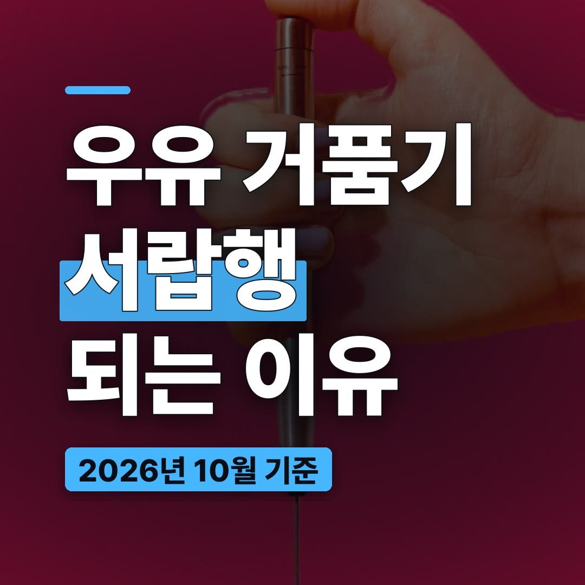
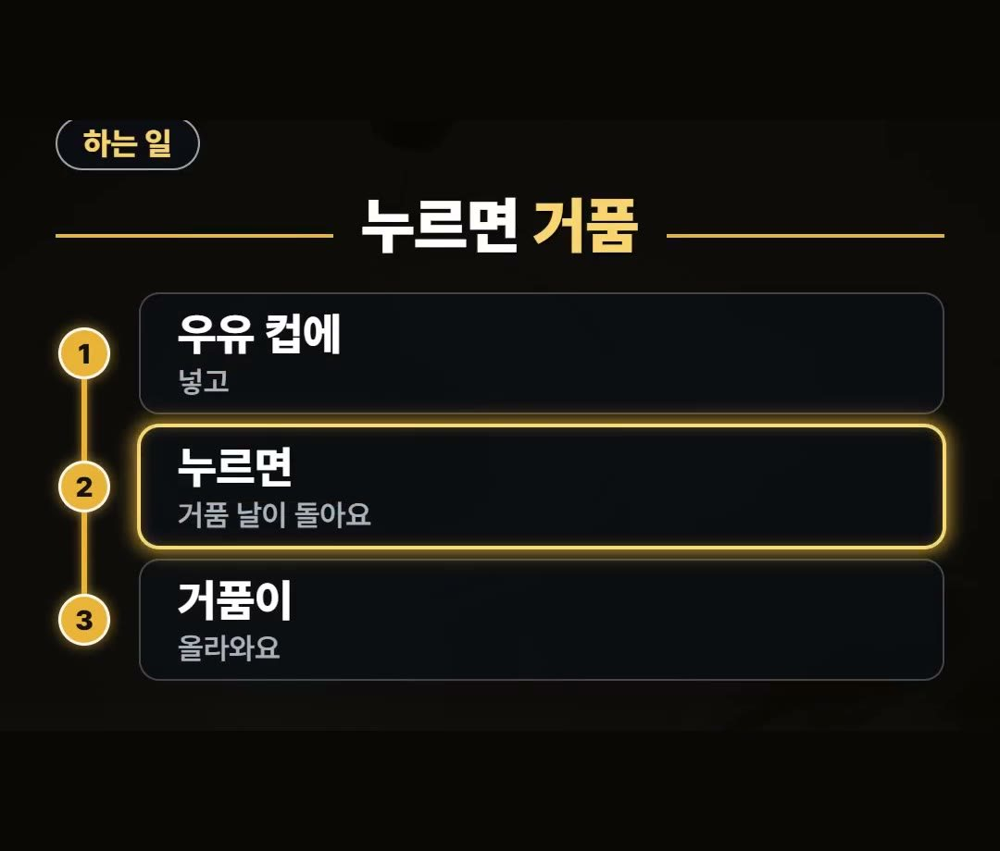
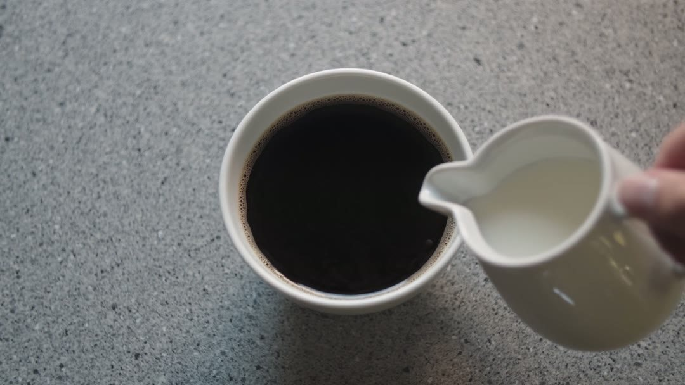
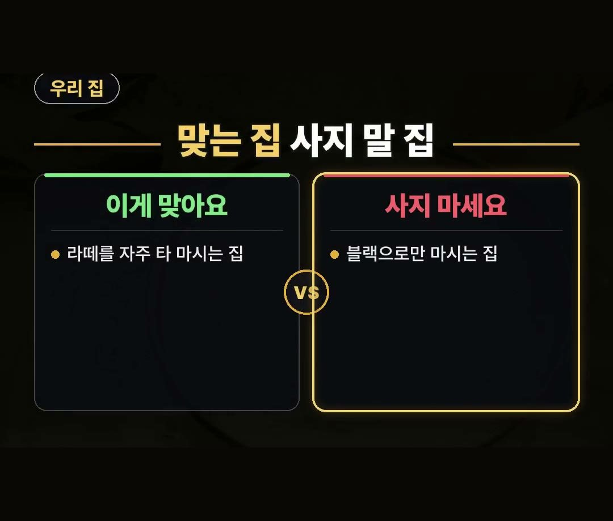

전동 우유 거품기, 이런 집이면 사지 마세요
※ 이 글에는 제휴 링크가 포함되어 있으며, 링크를 통해 구매하시면 일정 수수료를 받을 수 있습니다. (가격은 같습니다)
※ 이 포스팅은 쿠팡 파트너스 활동의 일환으로, 이에 따른 일정액의 수수료를 제공받습니다.
집에서 라떼를 타 마셔도 밍밍해서 결국 밖에서 사 마시게 되시죠?
우유를 그냥 부으면 거품이 없어서 그런 경우가 많아요.
이 글에서는 전동 우유 거품기가 어떤 물건인지, 살 때 무엇을 보면 좋은지, 어떤 집에 맞고 어떤 집은 사지 않는 편이 나은지까지 정리했습니다.
전동 우유 거품기는 거품 날 씻는 방법과 세워 둘 거치대까지 보고 고르세요.
씻기 번거롭고 둘 자리가 없으면 서랍에 들어가기 쉬워요! ☕

집에서 탄 라떼가 밍밍한 이유
집에서 라떼를 만들 때 커피에 우유를 그냥 부으면 거품이 없어서 맛이 밍밍하게 느껴질 수 있어요.
그래서 밖에서 사 마시는 라떼와 차이가 나는 것이죠.
전동 우유 거품기는 이 거품을 집에서 내 주는 물건입니다.
전동 우유 거품기는 이렇게 써요
전동 우유 거품기는 가는 거품 날이 전기로 돌아가는 물건이에요.
쓰는 순서는 간단합니다.
- 우유 컵에 넣고
- 누르면 거품 날이 돌아요
- 거품이 올라와요
따로 큰 기계를 들이지 않아도 컵 하나로 거품을 낼 수 있는 것이 특징이에요.

살 때 먼저 볼 것 — 전원 방식
살 때 먼저 볼 건 전원 방식이에요.
건전지로 도는지, 충전해서 쓰는지 제품 표시에 적혀 있어요.
집에서 쓰는 습관에 맞춰 편한 쪽을 고르면 됩니다.

서랍행 막는 곳 — 씻는 방법과 거치대
다음으로 볼 것은 거품 날 씻는 방법과 세워 두는 거치대예요.
고를 때 볼 기준을 정리하면 이렇습니다.
- 거품 날 씻는 방법
- 세워 두는 거치대
- 둘 자리
씻기 번거롭고 둘 자리가 없으면 결국 서랍에 들어가거든요.
쓰는 것뿐 아니라 씻고 두는 일까지 떠올려 보고 고르세요.
쓸 때는 제품 표시대로
뜨거운 우유에 쓸 때는 제품 표시대로 하세요.
거품 날은 쓰고 나서 바로 헹구면 편해요.
정리
- 전동 우유 거품기는 가는 거품 날이 전기로 돌아 우유 컵에서 거품을 내 주는 물건이에요.
- 살 때는 전원 방식(건전지·충전), 거품 날 씻는 방법, 세워 두는 거치대와 둘 자리를 보세요.
- 라떼를 자주 타 마시는 집이면 잘 맞고, 커피를 블랙으로만 마시는 집이면 자리만 차지하니 사지 마세요.

링크는 아래에 모아 두었어요.
📌 2026년 10월 기준 정보예요. 가격은 시기에 따라 달라질 수 있어요.
사진·영상: Pexels (Annushka Ahuja, Georgie Devlin, K, KATRIN BOLOVTSOVA, Klaus, Ron Lach)